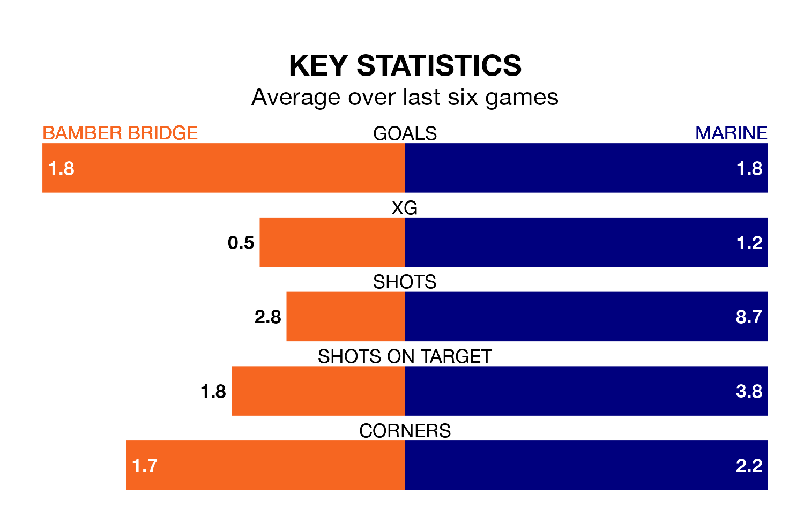

Marine are strong favourites to take all three points despite Bamber Bridge's home advantage in Saturday's match at the Sir Tom Finney Stadium.
*Betting Company* are offering odds of 1.73 on Marine sealing the win, with the visitors sitting third in Northern Premier League table.
Bamber Bridge, who are 15th in the league and 13 points behind Marine, are priced at 3.75 to win. A draw is set at 3.75.
With 52 goals in 26 games so far this season, Marine are the league's joint-third-highest scorers with 2.0 goals per game. And they are conceding fewer than average, letting in 33 goals at a rate of 1.3 per game.
Bamber Bridge, meanwhile, are average scorers, with 1.6 goals per game. They have also conceded 1.6 goals per game.
In the last five years, Bamber Bridge and Marine have played each other on four occasions. Bamber Bridge won two of them, Marine one, and they drew once.
On average, Bamber Bridge scored 1.8 goals and Marine 1.8 in those matches.
Their last meeting was on December 5, when Marine won 4-1 at home.
The home team are in reasonable form in Northern Premier League, with three wins and two draws from their last six games.
With two wins and two draws over that period, the visitors' form is worse – they have taken eight points from 18, compared to Bamber Bridge's 11.
Bamber Bridge's last match was on January 13, a 2-0 loss against Guiseley.
Marine beat Bradford Park Avenue 3-1 last time out, on Monday.
Updated: 06:13 (UTC), 18/01/24